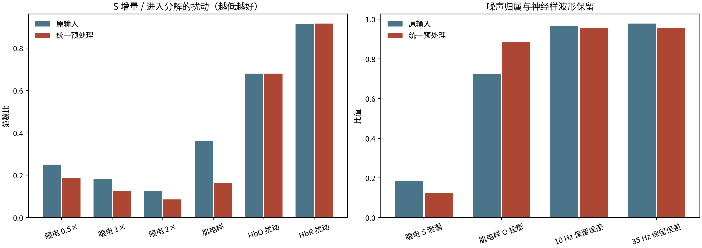
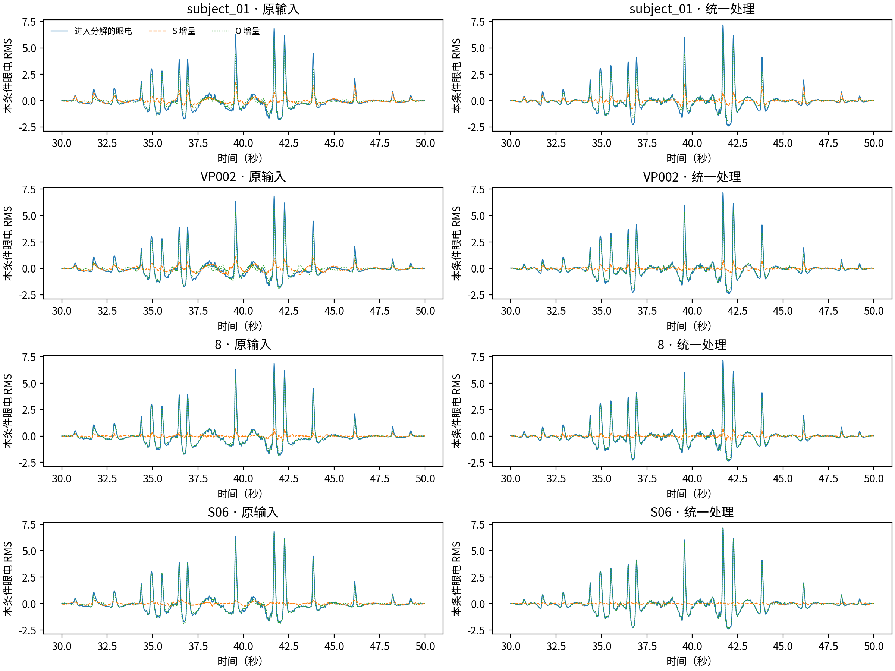

四个公开数据集各两名原验证被试，各取历史权重实验预定的同一条 90 秒记录窗。每名被试沿用生产缓存的三个代理区域和全头皮 EEG。全量生产缓存未改动。当前检验是全窗可见的条件拟合，只有人工加入的增量有已知值。
早期权重实验分别测量眼电、肌电样、Hb 平滑干扰和神经样改变；综合噪声误差曾改善，但 Hb 拟合变差，10/35 Hz 波形也进入 O。此前 12 人、24 窗的等权眼电确认中，0.5/1/2 倍有 9/12/19 个计划窗通过双门槛，每档计划 24 窗。冻结预测的对照曾显示功率约束本身已能产生低眼电泄漏。本次采用当前生产的个体主成分和 1:4:4 权重，历史等权数值只作为背景。
原分支采用原生采样率与生产训练参考。统一分支采用项目整记录 1–45 Hz 带通、200 Hz EEG，在原 348 个训练记录窗口重新估计电压功率参考。两分支保持 Hb、个体主成分、尺度、三个代理位置、模型方程与权重相同。重新拟合驱动、初态、τ 和 β。此比较同时包含 EEG 带通、采样率和参考统计改变。
原生电压中 30–50 秒加入相同扰动；统一臂将同一增量经相同滤波与时钟转换，不补回被滤掉的幅值。眼电使用实测 VEOG 派生波形及固定额前较强的混合。两种单色团脉冲直接加到已处理 Hb，保持另一色团和 EEG 输入不变。10/35 Hz 只改变 EEG，不能充当天然神经—血流耦合真值。
| 指标 | 原输入到统一输入 |
|---|---|
| EEG 功率代理 NRMSE | 0.461 → 0.460 |
| HbO NRMSE | 0.253 → 0.253 |
| HbR NRMSE | 0.266 → 0.265 |
| S 与观测电压的波形相关 | 0.837 → 0.883 |
| 一阶差分相关 | 0.906 → 0.891 |
| S / X 电压 RMS 比 | 0.319 → 0.406 |
| S / X 的 8–13 Hz 功率比 | 0.292 → 0.293 |
| S / X 的 13–30 Hz 功率比 | 0.486 → 0.483 |
| HbO-S / HbR-S 波形相关 | -0.890 → -0.890 |
| 合成后频带和局部窗的超限比例 | 0.942 → 0.942 |
三路 NRMSE 用同一被试冻结 SD 逐路归一，在三个区域和前 899 个 100 ms 点上取 RMS。电压 S 与 X 的相关及频带比取 30–50 秒、先按电极取中位数。S+O=X 是构造恒等式；重建相关、分量保真和独立来源归属分别判断。
| 条件 | 配对窗口 | S泄漏 | O有符号增益 | O增量相关 | S保留误差 |
|---|---|---|---|---|---|
| 眼电 0.5 倍 | 7/8 | 0.251 → 0.186 | 0.830 → 0.871 | 0.976 → 0.988 | — |
| 眼电 1 倍 | 8/8 | 0.183 → 0.125 | 0.882 → 0.914 | 0.987 → 0.995 | — |
| 眼电 2 倍 | 8/8 | 0.125 → 0.085 | 0.921 → 0.940 | 0.994 → 0.998 | — |
| 25–70 Hz 肌电样噪声 | 8/8 | 0.362 → 0.163 | 0.725 → 0.885 | 0.947 → 0.985 | — |
| HbO 单独扰动 | 8/8 | 0.680 → 0.680 | 0.344 → 0.344 | 0.817 → 0.817 | — |
| HbR 单独扰动 | 8/8 | 0.915 → 0.916 | 0.576 → 0.576 | 0.531 → 0.531 | — |
| 10 Hz 神经样探针 | 8/8 | 0.084 → 0.087 | 0.962 → 0.953 | 0.995 → 0.995 | 0.966 → 0.957 |
| 35 Hz 神经样探针 | 8/8 | 0.069 → 0.065 | 0.976 → 0.956 | 0.998 → 0.998 | 0.978 → 0.957 |
箭头为原输入到统一输入。S 泄漏为 S 增量范数 / 进入分解的已知扰动范数。O 有符号增益为 O 增量对扰动的内积 / 扰动平方范数。神经样保留误差为 S 增量与已知改变之差的范数 / 扰动范数。O 的增量相关描述形状。使用同条件合格配对，先库内平均被试再四库等权；门槛通过人数始终以全部八个窗口为分母。


具备真实 HEOG/VEOG 的四名被试中，以同窗眼电的零延迟线性子空间投影额前 X、S、O。表中是 O 的眼电相关投影占 X 相应投影的有符号增益。未注入观测的相关性不能识别真实的神经和眼电来源。
| arm | native | unified | |
|---|---|---|---|
| dataset | subject | ||
| eeg_fnirs_single_trial | subject_01 | 0.807 | 0.464 |
| subject_25 | 0.728 | 0.682 | |
| simultaneous_eeg_nirs | VP002 | 0.708 | 0.602 |
| VP019 | 0.662 | 0.674 |
432 个区域条件全部合格，其中 248 次实际重新优化、24 个原生产基线复用、160 个目标逐点相同的区域条件复用。合格 S/O 目标 143/144。保存的数值失败为 refed 31（native，ocular05）：LinAlgError: SVD did not converge。八个原 S 基线复现相对误差最大为 0。受试窗口未替换，局部约束和合成后重新滤波的超限是不同指标。